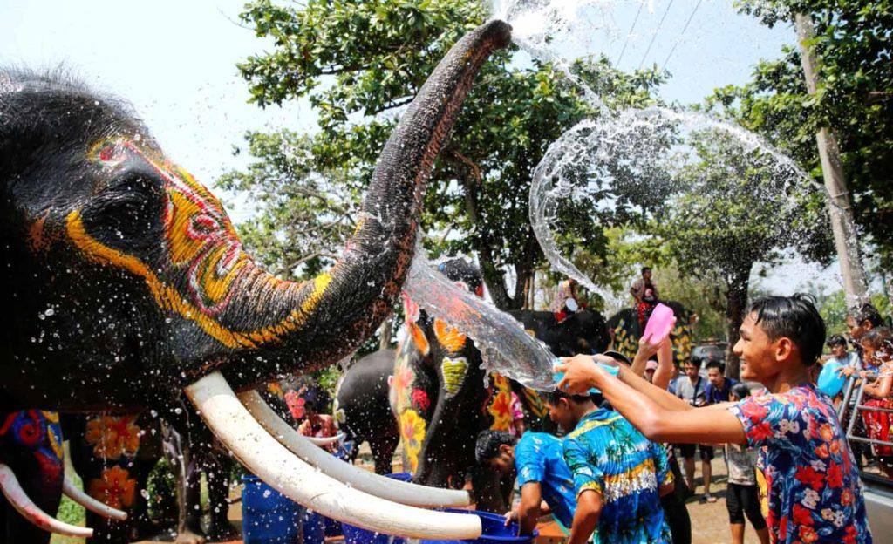

В странах бывшего СССР принято праздновать два Новых года – с 31 декабря на 1 января и так называемый Старый Новый
год (с 13 на 14 января по старому стилю). В других странах, особенно тех, которые считаются экзотическими,
празднование Нового года может происходить совсем по-другому – со свойственными определенной культуре традициями.
Старейший фестиваль в Таиланде – Сонгкран
Сонгкран – семейный праздник, относящийся к буддизму. Считается тайским Новым годом. В этот
день существует традиция готовить изысканные блюда для подношения священнослужителям, чтобы
почтить буддийскую философию. Статуя Будды, которая находится в доме, омывается водой с жасмином и лепестками
роз. Также принято поливать друг друга водой.
Сонгкран является самым старым тайским фестивалем. Событие символизирует переход в другое время
года, как в привычном для нас плане, так и по индийской астрологии. Тайцы делят год на три сезона: холодный,
жаркий и сезон дождей. Сонгкран является окончанием жаркого сезона, после которого начинаются дожди.

Праздник Сонгкран происходит из Древней Индии. Отсюда взято и название события, которое
обозначает «переход». Поливание водой друг друга обозначает скорый сезон дождей и получение от этого хорошего
рисового урожая. Праздник появился в Таиланде благодаря торговым путям всего Индокитая. Сонгкран празднуют и в
соседних с Таиландом странах.
Торожество начинается с «тхам бун» – подаяния буддийским монахам, которые в ответ всех
благословляют. В храмах проводятся различные ритуалы: сладости заворачивают в листья пальм и несут к
священнослужителям, прославляют учение Будды и др.
Дни недели в Тайланде по назваванию и по цвету
понедельник
день примирения
вторник
день отдыха
среда
два в одном
четверг
день медитации
пятница
день созерцания
суббота
день защиты
воскресенье
день сдержанности
Таиланд омывается двумя морями. С востока это воды Сиамского залива от Южно-Китайского моря, а с запада находится Андаманское море. Граничит Таиланд с одной стороны с Камбоджей и Лаосом, затем с другой стороны - с Мьянмой, и на юге проходит граница с Малайзией.
Рельеф страны очень разнообразен: равнины с холмами, скалы с пляжами. Природа просто дивная. В королевстве насчитывается около 70 нацпарков и заповедников. Также Таиланд - это не только континентальная часть, но и множество островов, расположенных в прибрежных водах. Есть маленькие и большие, а самые крупные из них - это Пхукет, Чанг и Самуи.
Официальное название страны звучит так - Королевство Таиланд.
Население, по данным ООН, составляет более 67,8 млн человек.
Столица Таиланда - город Бангкок.
Основной язык тут тайский, но и на английском вас поймут.
Основная религия - буддизм.
РЕКЛАМА
Таиланд: общая информация о стране. Самое основное, что надо знать
18 января
Таиланд - страна, очень любимая туристами за свой изумительный климат, массу достопримечательностей, потрясающие шоу и вкусную еду. Тут есть великолепные пляжи на островах и огненные дискотеки, древние величественные храмы и красивый подводный мир. Не зря говорят, что Тай = Рай!
Тай=Рай
Прогуливаясь по улочкам городов Тая, вы обязательно увидите сияющие дружелюбными улыбками лица тайцев и запомните их неподдельную приветливость. Эта страна многогранна - тут есть и шумные уличные рынки, и сказочные старые города, и современные фешенебельные отели. Давайте познакомимся со страной поближе.
География Таиланда
Таиланд находится в Юго-Восточной Азии. Это страна гор, джунглей и равнин. Площадь равняется 513 115 кв.км. Если посмотреть на карту, то видно, что форма страны похожа на голову слона. Там, где должны быть глаза, находится Бангкок, а хобот - полоса юга, где и расположились наиболее популярные курорты.
Карта Тайланда
Таиланд омывается двумя морями. С востока это воды Сиамского залива от Южно-Китайского моря, а с запада находится Андаманское море. Граничит Таиланд с одной стороны с Камбоджей и Лаосом, затем с другой стороны - с Мьянмой, и на юге проходит граница с Малайзией.
Рельеф страны очень разнообразен: равнины с холмами, скалы с пляжами. Природа просто дивная. В королевстве насчитывается около 70 нацпарков и заповедников. Также Таиланд - это не только континентальная часть, но и множество островов, расположенных в прибрежных водах. Есть маленькие и большие, а самые крупные из них - это Пхукет, Чанг и Самуи.
Официальное название страны звучит так - Королевство Таиланд.
Население, по данным ООН, составляет более 67,8 млн человек.
Столица Таиланда - город Бангкок.
Основной язык тут тайский, но и на английском вас поймут.
Основная религия - буддизм.
Буддийский храм
Климат Таиланда
Жарко ли в Таиланде? Когда сюда ехать? Есть ли сезон дождей в Таиланде?
Вообще тут есть два основных типа в стране: это муссонный и тропический климат саванны.
Например, климат центральной части королевства такой: тут три сезона, а не четыре, как мы привыкли. Первый - жаркий, который длится с марта по май. В это время температура достигает +42 °C. Далее идет дождливый сезон с июня по октябрь, когда температура стоит на отметке +26...+32 °C. Финал и начало года - прохладный сезон, который идет с ноября по февраль. В этот период температура составляет +18...+32 °C.
Погода в Таиланде
Это, что касается центра. На севере Таиланда в зимние месяцы довольно прохладно, а ночью даже может быть и холодно.
А вот на юге с марта по ноябрь очень влажно, так что учтите, что туда ехать лучше с февраля по март.
Сезон дождей в Таиланде - когда он? На самом деле единого периода сезона дождей в этой стране просто нет. Муссон идет поэтапно. Например, в августе заливает Пхукет, в ноябре уже льет в Самуи. Но даже если вы попали именно в период муссонов на вашем курорте, то бояться за испорченный отдых не стоит. Это ведь тропические ливни! Они тут длятся до получаса в день, а все остальное время будет яркое солнце.
Если вы хотите увидеть Таиланд в бархатный сезон, то посетите страну в период с ноября по февраль. В это время на большей части государства погода стоит сухая. Но при этом она не такая жаркая, как весной и летом.
А вот на север королевства не стоит ехать в августе или сентябре. Ведь именно в это время тут идут сильные проливные дожди и ветер, которые испортят вам все впечатление.